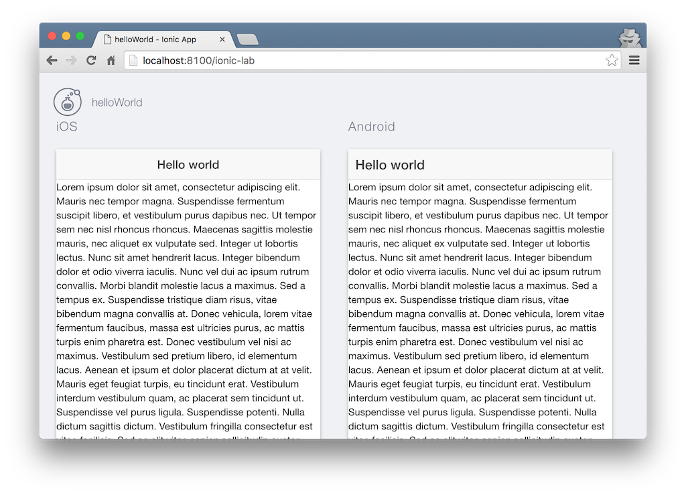
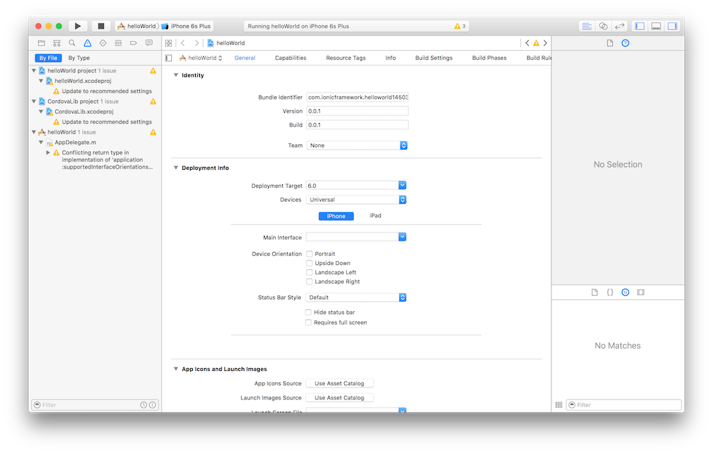

Ionic 시작하기
Ionic이란?
하이브리드 앱은 각 모바일 프레임워크에서 제공하는 웹뷰 위에 구동되는 웹 어플리케이션이다. 따라서 HTML, CSS, Javascript 코드로 화면을 개발하고 모바일 디바이스의 자원을 사용하기 위해서는 코르도바(Cordova) 같은 크로스 개발 플랫폼을 사용해서 디바이스의 카메라나 위치정보에 접근할 수 있다.
아이오닉(Ionic)도 마찬가지로 하이브리드 앱중의 하나이다. 기본적으로 코르도바 개발 프레임웍 위에서 동작하고 앵귤러(AngularJS) 자바스크립트 프레임웍을 사용한다. 때문에 MVC 뿐만아니라 MVW 디자인 패턴 구현이 쉽고, 웹에서 사용하는 앵귤러 코드를 그대로 모바일로 가져다 사용할 수 있는 코드 재사용의 이점이 있다. 아이오닉은 각 모바일 페이지 관리를 위해 UI Router라는 앵귤러 써드파티 라이브러리를 추가로 사용한다.
네이티브 모바일 어플리케이션에 비해 성능 및 일부 기능의 한계라는 단점이 있는 것은 사실이다. 하지만 아래의 장점들을 생각한다면 아이오닉을 이용한 크로스플랫폼 개발을 고려하지 않을 이유는 없는 것 같다.
- 멀티 플랫폼. 하나의 코드로 모든 디바이스 어플리케이션을 빌드할 수 있다.
- 각 플랫폼에 최적화된 UI 컴포넌트를 제공한다.
- 앵귤러의 모든 장점을 그대로 수용한다. (데이터 바인딩, MVW 디자인 패턴, 테스트, 다양한 서트피티 모듈 등)
개발환경 구성
아이오닉은 노드 개발환경을 사용하기 때문에 노드를 설치해야 한다.
Npm으로 아이오닉과 코르도바(cordova)를 설치한다.
$ sudo npm install -g ionic cordova
아이오닉은 내부적으로 코르도바를 사용한다. 코르도바가 html, js, css를 네이티브앱으로 변환해 주기 때문에 코르도바에 앵귤러를 직접 사용하면 되지 굳이 Ionic을 사용할 필요가 있을까? 그럼 아이오닉을 사용하는 하는 이유는 뭘까?
아래 링크는 아이오닉과 코르도바의 차이에 대한 설명이다.
- Ionic vs. Pure Cordova: Three Reasons Ionic Wins
- Quora. What is the difference between Cordova and Ionic?
코르도바로 빌드하게되면 네이티브 앱이 만들어지기는 하지만 플랫폼에 어울리는 디자인은 아니다.
iOS나 안드로이드 스타일의 컴포넌트 디자인이 아니라는 것이다.
하지만 아이오닉은 각 플랫폼에 맞는 스타일의 컴포넌트를 미리 제공하기 때문에 쉽게 UI를 개발할 수 있다.
또한 ionic serve 명령어로 편리하게 개발할수 있고 결과물이 코르도바에 비해 뛰어난 성능을 보장한다.
이러한 장점에 더해 앵귤러가 제공하는 MV* 패턴으로 견고한 어플리케이션을 설계할 수 있는 장점이 있다고 생각한다.
$ ionic --version
1.7.16
현재 v1.7.16 버전을 설치했다.
프로젝트 생성
아래 명령어로 helloWorld 아이오닉 프로젝트를 생성한다.
$ ionic start helloWorld blank
마지막에 blank 옵션 없이 사용하면 기본적으로 tabs 옵션이 따라 붙는다. (참고)
이것은 프로젝트 생성시 템플릿을 설정하는 옵션인데 우리는 간단한 hello world를 확인할 것이니깐 아무것도 없는 blank 옵션을 추가한다.
푸시 노티피케이션을 사용하기 위해 ionic.io 계정을 만들거냐는 질문을 하지만 n를 입력하고 진행한다.
설치가 완료되면 helloWorld 폴더가 생성되는데 이쪽으로 이동한 뒤 아래 명령어를 실행해 보자.
$ ionic serve
로컬 서버가 구동되면서 웹브라우져가 열리면서 아래 화면이 나온다. 웹브라우져를 시뮬레이터로 사용하면서 개발을 진행할 수 있다.

코드 수정
생성된 폴더를 에디터로 열어보면 아래와 같다.

www 폴더에 우리가 작성할 html, js, css 파일들이 있다.
index.html을 열고 간단히 타이틀만 "Hello world"로 변경하고 저장하자.
그럼 바로 ionic serve 명령어가 코드 변화를 감지하고 이를 웹브라우져에 반영한다.


아이오닉의 장점은 하나의 코드로 멀티 플랫폼을 지원하는 것이다. 아래 명령어를 사용하면 각 플랫폼에서의 결과물을 테스트할 수 있다.
$ ionic serve --lab

빌드
작성한 코드를 각 플랫폼에 맞게 빌드해 보자. 여기서는 iOS용으로 빌드해 보겠다.
$ ionic build ios
위 명령어로 빌드하게 되면 platforms/ios 폴더에 xcode용 프로젝트가 생성된다. helloWorld.xcodeproj 파일을 xocde로 연다.

몇가지 워닝이 뜨긴하지만 Xcode로 빌드는 된다. Object-C를 좀 알면 워닝을 수정하고 싶은데 좀 아쉽다. 이후는 Xcode로 iOS 개발 과정과 동일하게 진행할 수 있다.
배포
애플스토어나 구글 플레이스토어에 보면 [Ionic View(http://view.ionic.io)라는 어플이 있다. 아이오닉 앱을 배포하고 테스트할 때 사용하는 용도이다. 개발자가 아이오닉으로 개발하고 결과물을 아이오닉 클라우드에 업로드 하면 아이오닉 뷰를 통해 다운로드 할 수 있다. 그러기 위해선 우선 아이오닉 클라우드 계정이 필요한데 http://ionic.io에서 생성한다.
그리고 아래 명령어를 통해 우리가 만든 helloWorld 앱을 업로드한다.
$ ionic upload
업로드가 완료되면 아이오닉 뷰를 통해 helloWorld를 다운로드 한다.